【中景 / 略仰拍 / 深圳南山某写字楼32层会议室】
我站在路演台上，PPT翻到第十七页——"市场规模与增长预期"。
台下坐着六个人，穿得比我贵十倍。鸿蒙资本领投的投资人团。
我尽量让自己的声音听起来自信："我们的AI算法优化平台，已经在三个种子客户身上验证了——"
【特写 / 平视 / 对面投资人】
一只手举了起来。银色背头，鹰钩鼻，三件套定制西装——赵鸿渊，鸿蒙资本创始人。
朱总，你这个所谓的AI优化，和我们鸿蒙已经在做的智能调度平台，核心差异在哪？
我心里一沉。他根本不是在问问题——他是在告诉台下所有人：我们在做一样的东西。
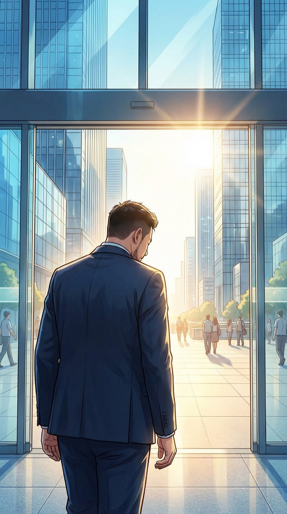
【全身 / 背影 / 写字楼大堂出口】
四十分钟后，我走出那扇旋转门。
深圳七月的太阳像一把热刀。"市场空间有限，我们再看看。"——这是体面的拒绝。
翻译过来就是：你做的东西，大公司随时可以碾死你。
【特写 / 过肩 / 手机屏幕】
我掏出手机，打开银行APP。
账户余额：¥470,000.00
够活两个月。如果节省一点，也许三个月。
三个月后，就是给团队发不出工资的那天。
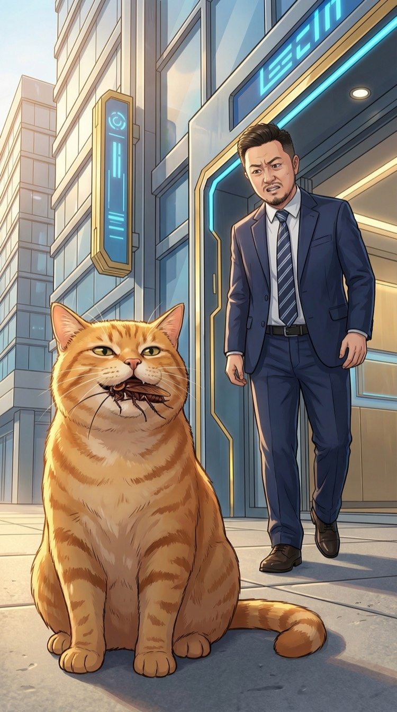
【低角度仰拍 / 公司门口人行道】
回到公司楼下，大橘蹲在门口等我。
嘴里叼着一只死蟑螂，尾巴翘得老高，一脸"看我给你带了什么好东西"的得意表情。
……谢谢啊，但我现在需要的不是蟑螂，是四百万。
我蹲下来摸了摸它的头。至少还有一个活物无条件相信我。
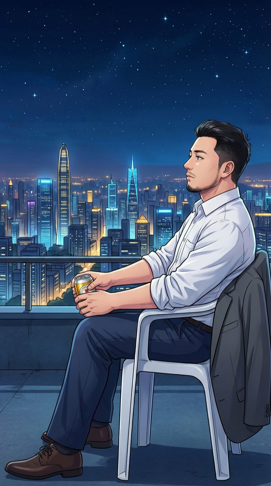
【侧面3/4 / 中景 / 公司天台 / 夜景】
晚上十一点，我一个人坐在天台上。西装外套搭在椅背上，衬衫袖子卷到小臂。
面前是深圳的夜景，几百万盏灯。手里是第三罐啤酒。
如果创业也能像修仙小说那样就好了……打怪升级，突破境界，一路往上。
而不是这样——被资本巨头一句话就否定了半年的努力。
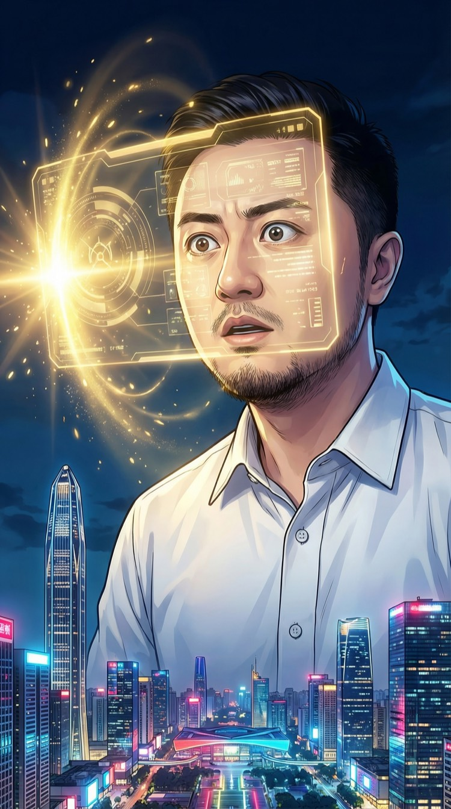
【特写 / 略仰 / 金色光芒照亮面部】
然后——
我的视野里，凭空出现了一道金色的光。
不是错觉。不是啤酒喝多了。是一个半透明的、悬浮在空气中的界面，像AR投影一样出现在我面前。
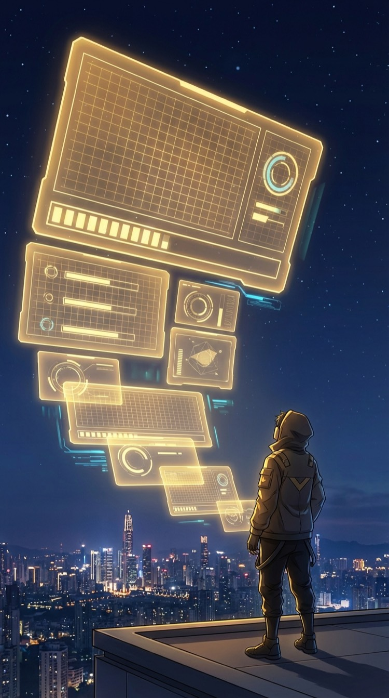
【商道修仙系统已绑定】
宿主：朱江
境界：凡人（未入门）
灵气：0/100
天赋：直觉悟道（SSR级）
⚡ 首个任务：72小时内签下第一个付费客户
→ 奖励：突破炼气期
→ 失败惩罚：系统解绑，永久消失
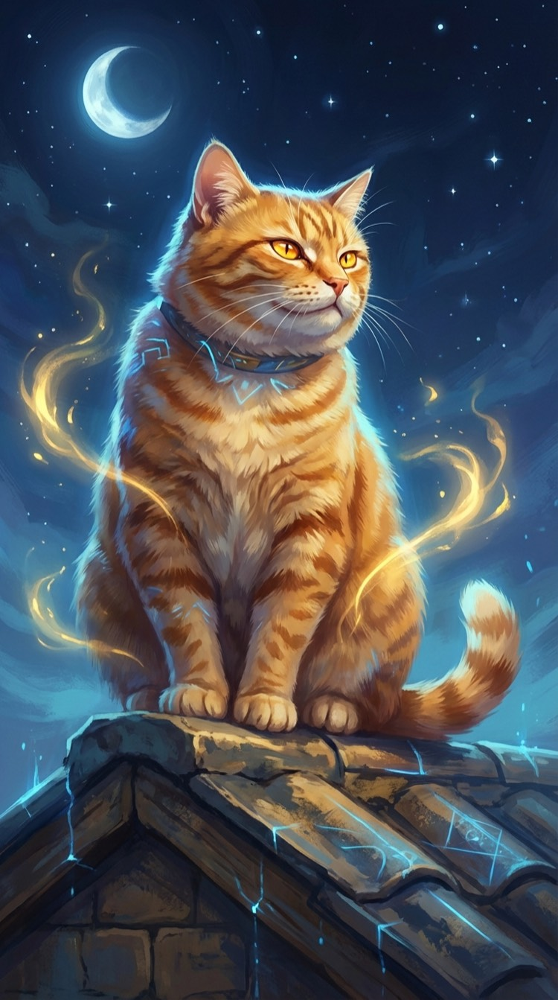
【特写 / 大橘 / 天台栏杆上 / 月光背光】
我以为自己中暑了。然后——
别愣着了，你只有72小时。
大橘开口说话了。
不是"喵"。是人话。普通话。还带着一点嫌弃的语气。
我看了看手里的啤酒罐。才三罐啊……不至于吧？
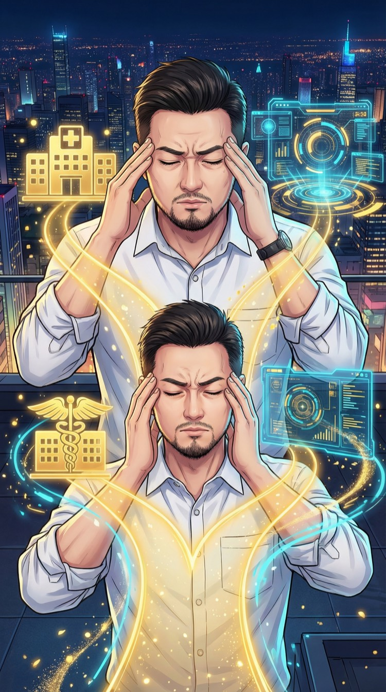
DECISION-1：面对突如其来的修仙系统，我的第一反应是——
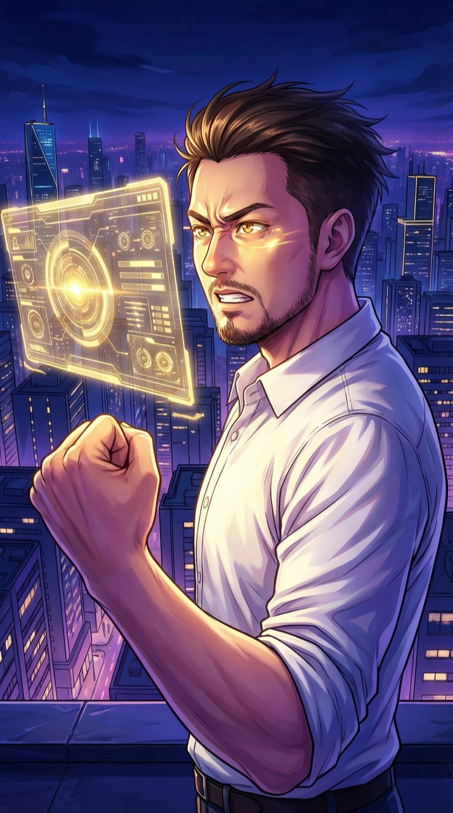
【低角度英雄镜头 / 仰拍 / 夜空为背景】
我站了起来。啤酒罐扔进垃圾桶。
赌一把。如果这破系统是真的——那它选中我，就说明这条路走得通。
如果是假的——明天继续找客户，和没有系统时一样。
拳头握紧。夜风吹过，金色的界面在风中微微闪烁。
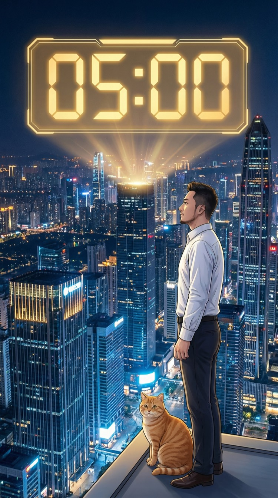
【远景 / 城市天际线上方悬浮金色倒计时】
深圳的夜空中，一个只有我能看到的金色倒计时开始转动。
剩余时间：71:58:32
任务：签下第一个付费客户
——大橘蹲在我脚边，打了个哈欠：
三千年了，终于又有新韭菜……啊不，新宿主了。加油吧小伙子。
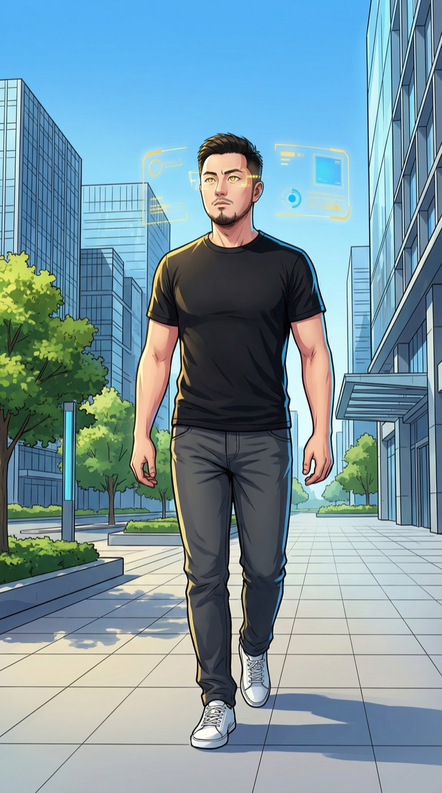
【中全景 / 跟拍 / 深圳南山科技园 / 清晨】
第二天一早。黑色T恤，休闲裤，运动鞋——创业者标配。
我走在科技园里，感觉世界变了。
不是科技园变了——是我的眼睛变了。
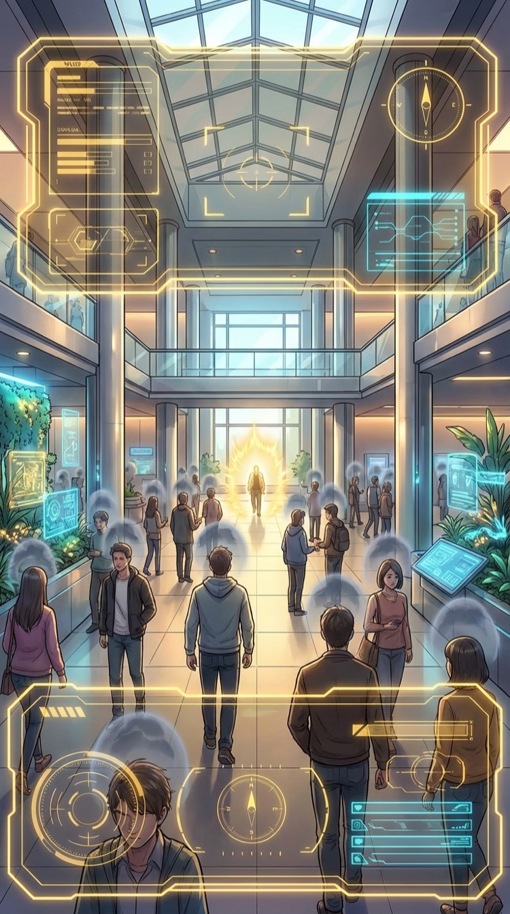
【主观POV / 金色HUD叠加 / 科技园大厅】
系统解锁了一个叫"灵气感知"的能力。
我能看到每个人、每家公司头顶的光——灰色的，代表没有需求；金色的，代表我们的产品能帮到他们。
满眼灰色。灰色。灰色。灰色……
等等——那边有一个金色的。
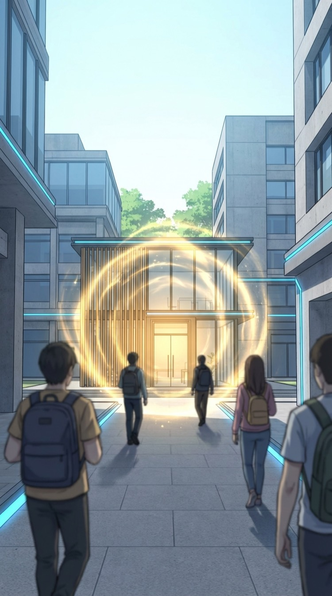
【中景 / 接近中的视角 / 一家小型创业公司门口】
科技园B栋3楼，一家叫"闪送达"的小公司。做外卖配送的。
它的门口，金色的灵气像呼吸一样一明一暗地跳动。
需求匹配度：94%
痛点：配送路径算法效率低下
预估签约难度：★★☆☆☆
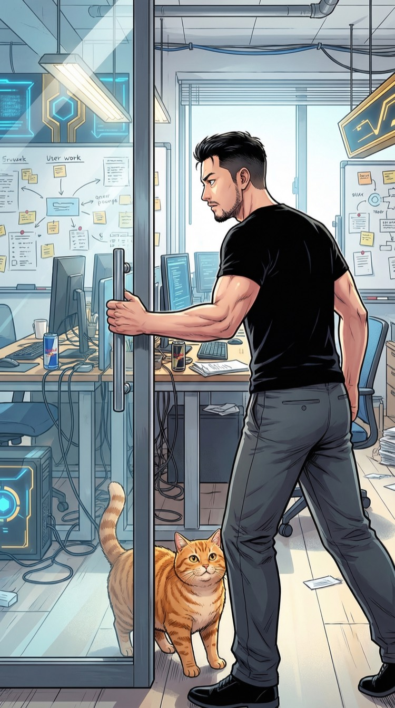
【中景 / 自然跟拍 / 推开玻璃门】
我推开门走进去。大橘不知道什么时候跟来了，从我脚边挤进门缝。
喂，你不是猫吗？在家待着不好吗？
——大橘（只有我听得见）：闲着也是闲着。而且这里可能有小鱼干。
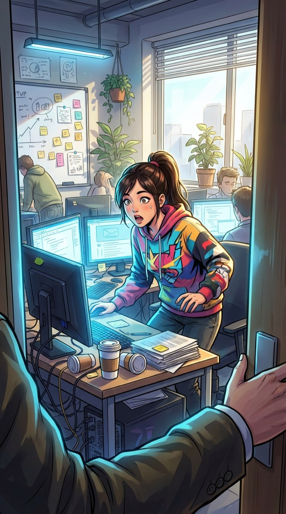
【中景 / 从门口向内拍 / 办公室内部】
一个扎马尾辫的女生从电脑后面探出头——满桌咖啡杯和外卖盒。
你好？请问找谁？
周小鱼，95后，"闪送达"CEO。眼睛很亮，但眼下有黑眼圈——创业者的标配。
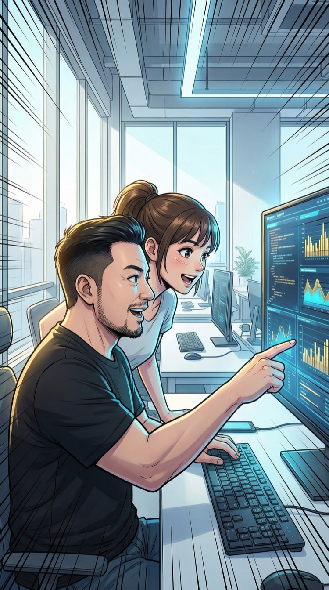
【双人侧拍 / 屏幕内容可见 / 办公桌前】
我坐到她旁边，看了一眼她的配送路径算法代码——
这个嵌套循环……效率低得让人心疼。但思路是对的，只是实现方式不够优雅。
周总，你这个路径规划的核心逻辑没问题，但如果用我们的图优化引擎替换这一层——
我在键盘上飞速敲了起来。
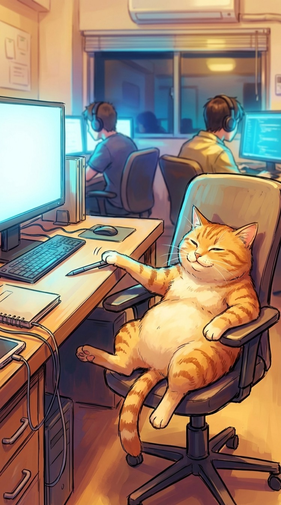
【中景 / 聚焦大橘 / 办公室角落】
我讲方案的时候，大橘已经自己找了个位置——
它跳上了一个实习生的椅子，用爪子拨弄桌上的签字笔，一脸"这个公司的文具品味不行"的表情。
——大橘（低声）：这家公司暖气不错。伙食待考察。
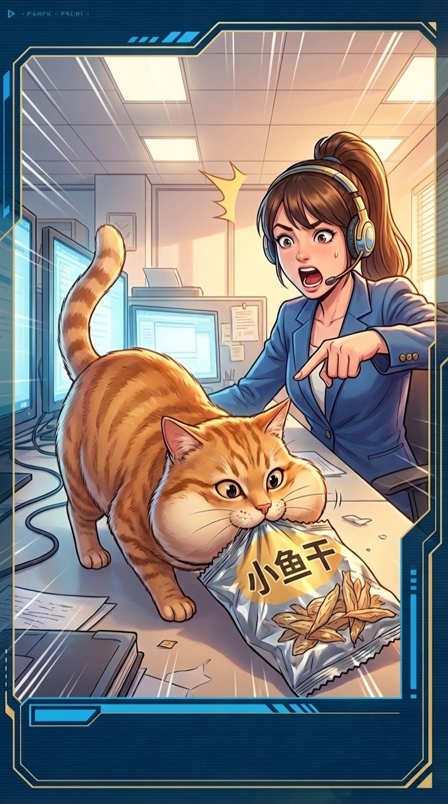
【特写 / 定格喜剧瞬间 / 办公桌上】
嘎吱嘎吱嘎吱——
周小鱼突然转头。
大橘的整张脸埋在一包小鱼干零食袋里，腮帮子鼓得像河豚。
你们公司的……猫？
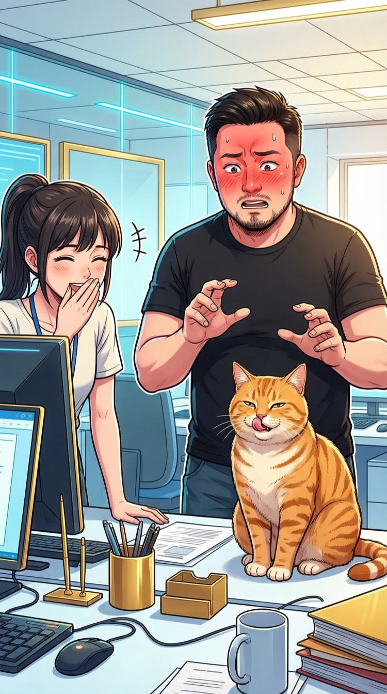
【双人中景 / 喜剧反应 / 大橘在中间】
我感觉脸在发烫。
它……它是我们的用户体验官。
周小鱼笑出了声。大橘面不改色地舔干净嘴角的鱼干碎屑，坐得端端正正。
——大橘（只有我听见）：没毛病。体验你们公司零食品质，合格。
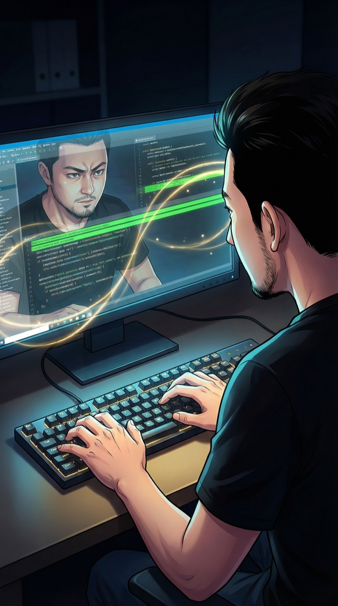
【过肩特写 / 屏幕代码 / 金色灵气流动】
回到正事。我的手指在键盘上飞舞。
奇怪的是——代码行间，隐约有金色的灵气在流动。我能"看到"最优解在哪里，像有人在暗处给我画了一条金色的路。
这就是系统说的"直觉悟道"？
三十分钟。配送路径优化完成。效率提升40%。
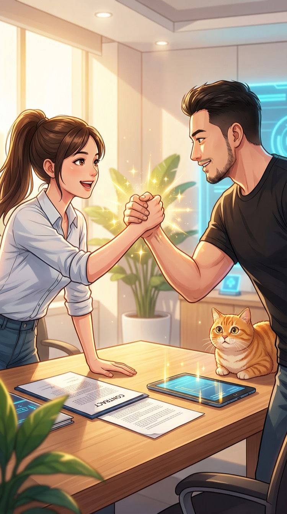
【中景 / 握手特写 / 金色光闪】
周小鱼看着跑出来的测试数据，眼睛越来越亮。
朱总，合同在哪？我现在就签。
我们的手握在一起的那一刻——
我感觉全身一热。像有什么东西在血管里炸开。
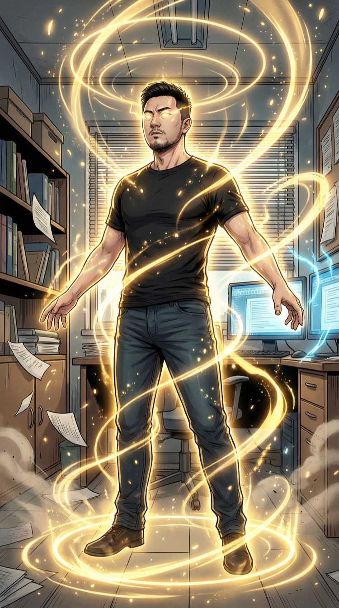
【全身 / 中心构图 / 金色能量爆发 / 史诗感】
【突破！炼气一层！】
灵气：0/100 → 35/100
🔓 新能力解锁：「商业直觉」
→ 可感知对手商业决策背后的真实意图
→ 每天3次
金色的灵气从我体内涌出，像涟漪一样向四周扩散——
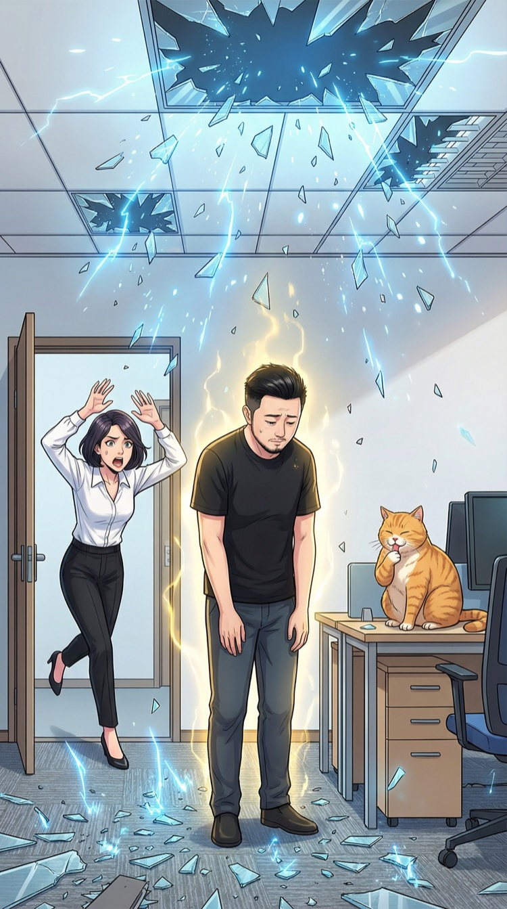
【广角 / 喜剧全景 / 办公室内】
啪——啪啪啪啪！
办公室的灯泡全炸了。
林晚晴从隔壁冲进来，双手护头："停电了？！跳闸了？！"
我站在一地碎玻璃中间，努力装出若无其事的样子。
——大橘（淡定舔爪）：体质太差。突破个炼气期就这反应。丢人。
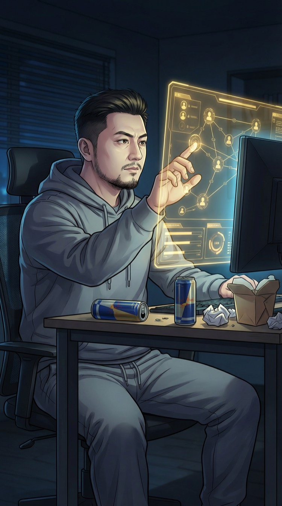
【中景 / 暗调 / 深夜办公室 / 屏幕+HUD光】
凌晨两点。灰色卫衣，运动裤。桌上堆着空的红牛罐和外卖盒。
我决定试试新能力——"商业直觉"。
赵鸿渊，鸿蒙资本。今天路演上，他拒绝我的真正原因是什么？
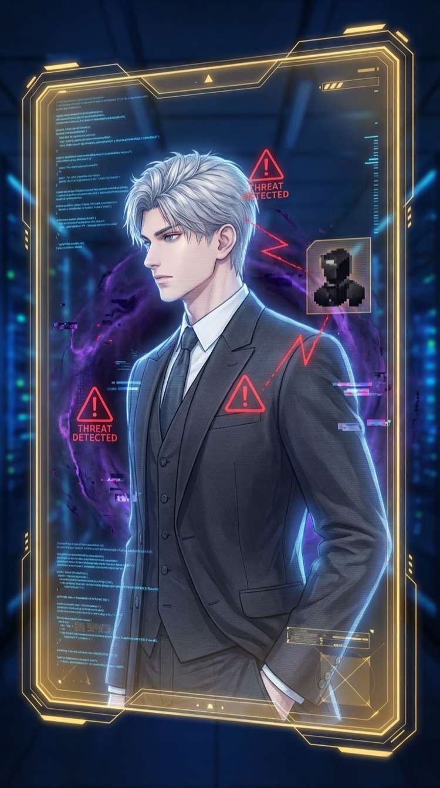
【主观POV / HUD分析界面 / 赵鸿渊资料】
金色HUD弹出分析结果——
⚠️ 商业直觉分析结果：
目标：赵鸿渊（鸿蒙资本）
表面理由：市场空间有限
真实意图：鸿蒙资本自研同类产品「天枢系统」
→ 拒绝投资目的：延缓竞争对手融资进度
→ 威胁等级：⛔ 极高
所以不是我不够好——是他根本不想让我活下去。
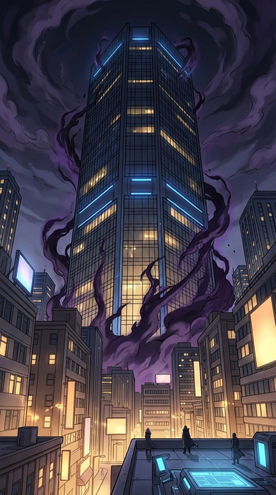
【远景 / 仰拍 / 鸿蒙大厦夜景 / 黑色灵气缠绕】
我把视线投向窗外——远处，鸿蒙资本大厦的顶层，弥漫着黑紫色的灵气。
像活的。像一头蜷缩在大楼里的巨兽在呼吸。
——大橘跳上桌，看向同一个方向：
魔修。赵鸿渊用的是邪道手段经商。在修仙维度里，他已经是魔道中人了。
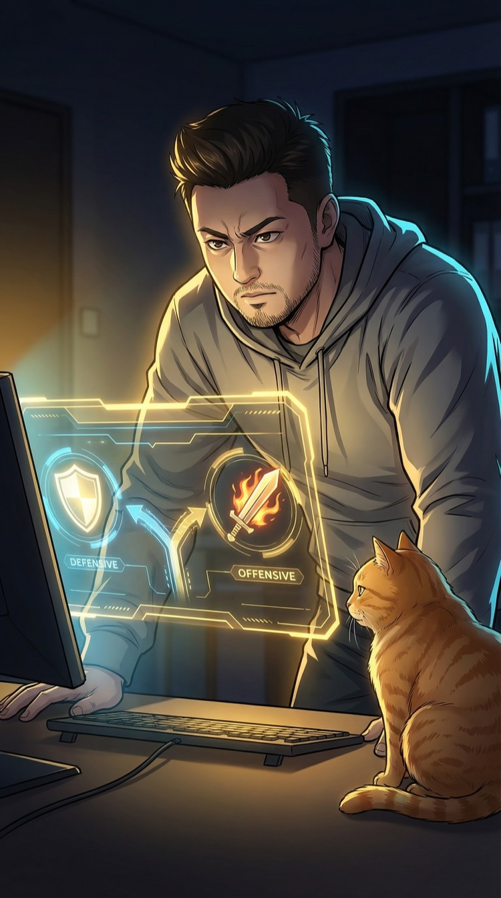
DECISION-2：发现赵鸿渊的真实意图后——
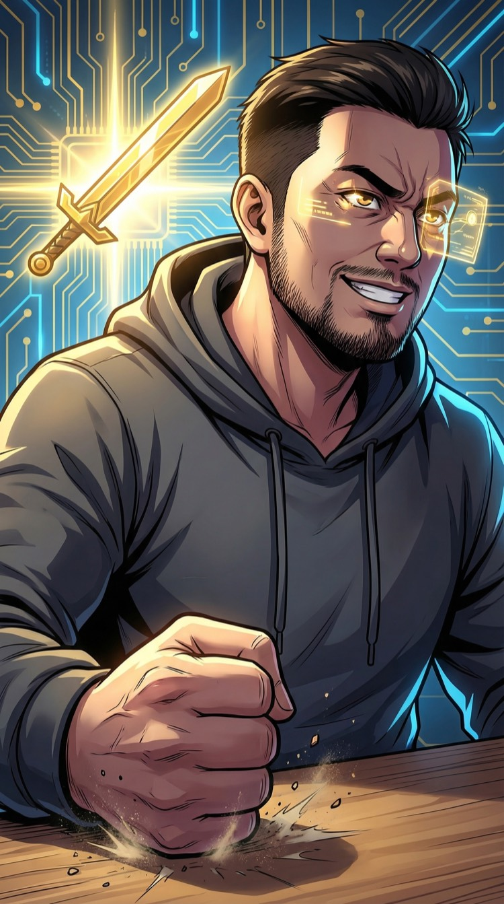
【特写 / 侧光 / 拳头砸桌 / 金色反光】
拳头砸在桌上。红牛罐跳了一下。
赵鸿渊，你用邪道手段垄断市场，我就用正道手段一个一个把客户抢回来。
你不让我融资？我自己挣。一个客户一个客户地挣。
——大橘：哟，有点修仙者的样子了。虽然才炼气一层。
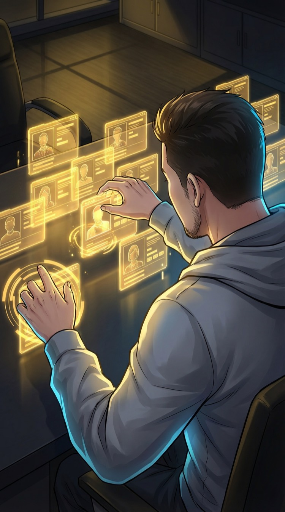
【过肩 / 多个金色全息档案悬浮 / 策略布局】
我调出系统的灵气感知地图——整个深圳的商业灵气分布。
赵鸿渊的下一批目标客户，我已经能看到了。金色光点标注着每一个。
二十三个。赵鸿渊要吃掉的下一批目标客户，一共二十三个。
我要在他之前，拿下尽可能多的。
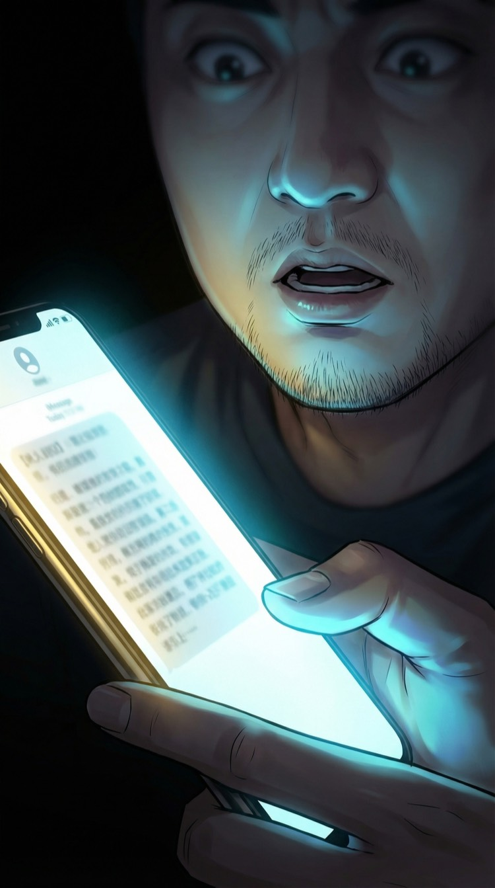
【极端特写 / 手机屏幕 / 暗室唯一光源】
正要出发——
叮。
手机震了一下。一条匿名短信。
幽灵，你以为换了马甲我就不认识你了？
——R
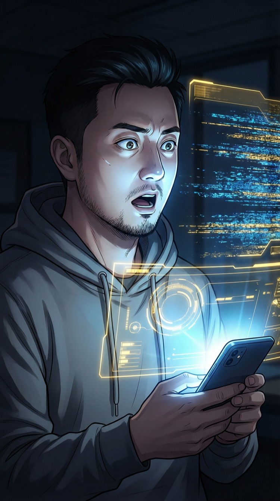
【中特写 / 手机光照亮脸 / 暗室 / HUD闪烁】
我的手指僵住了。
"幽灵"——这是我大学时代玩渗透测试时的网名。
没有人知道"幽灵"和"朱江"是同一个人。没有人应该知道。
R是谁？他怎么找到我的？他想要什么？
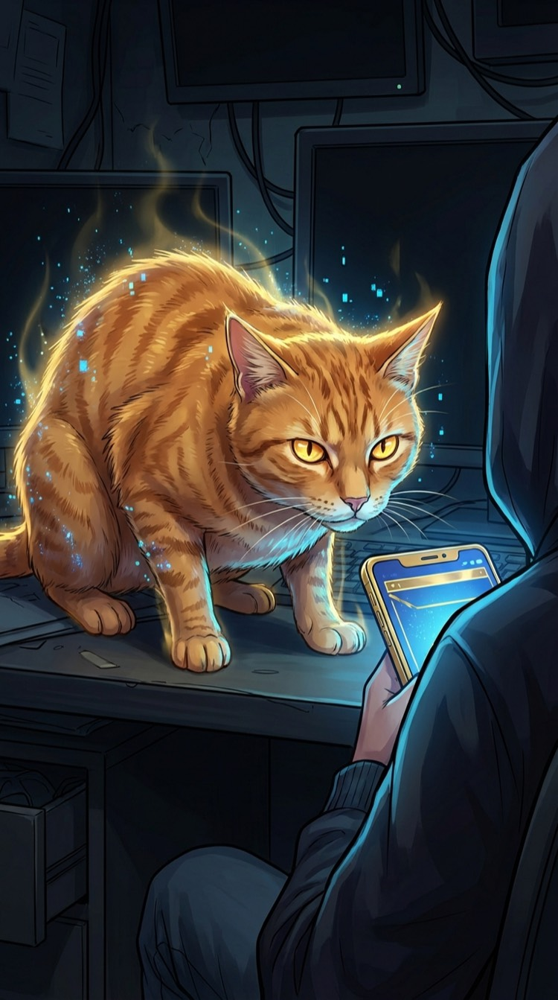
【特写 / 大橘面部 / 罕见的严肃表情 / 暗调】
大橘跳上桌，看了一眼手机屏幕。
它脸上那种永远欠揍的懒散表情消失了。取而代之的是——
你以前的事，比你想象的被更多人记住了。
第一次。大橘第一次用认真的语气跟我说话。没有嘲讽，没有阴阳怪气。
这让我比短信本身更害怕。
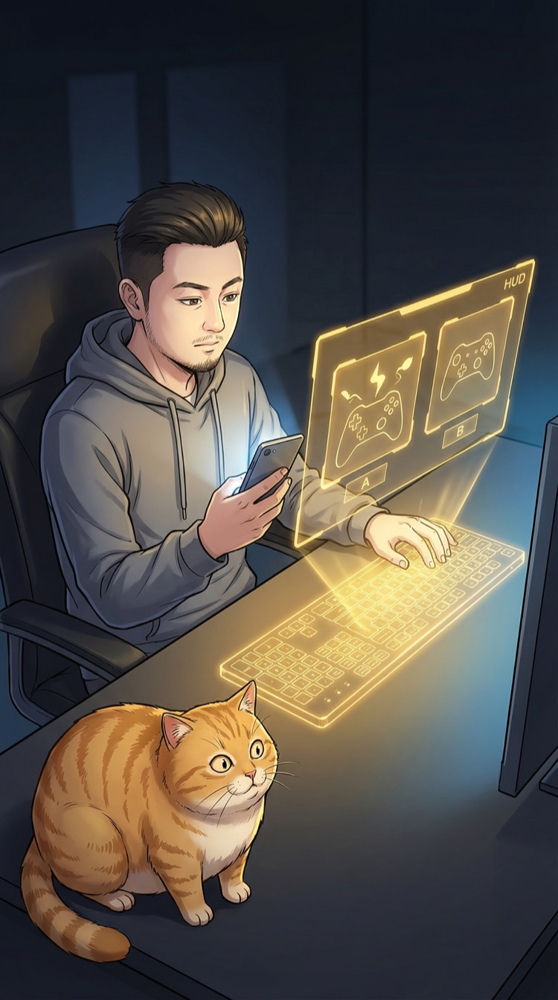
DECISION-3：面对这条来自过去的威胁——
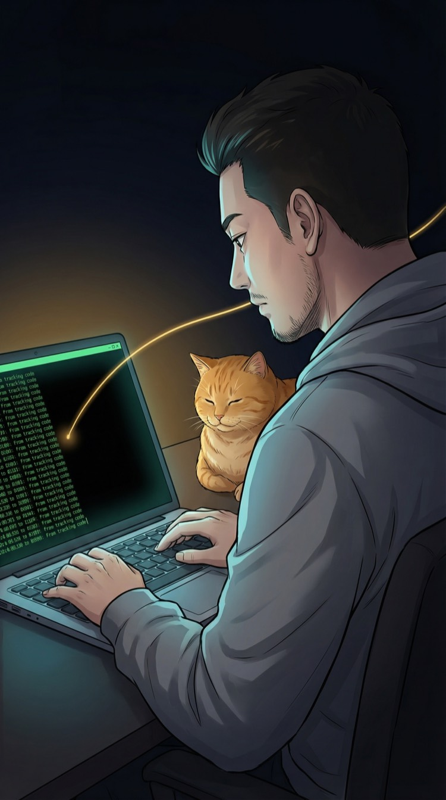
【过肩 / 笔记本终端 / 绿色代码 / 金色灵线】
我打开笔记本，十五分钟写了一个被动追踪脚本。
如果这个号码再发任何消息——IP、设备指纹、基站信息，全部自动抓取。
——大橘（恢复了一点欠揍的语气）：没想到你除了创业还会这个。藏得挺深啊。
每个人都有不想被翻出来的过去。我也一样。
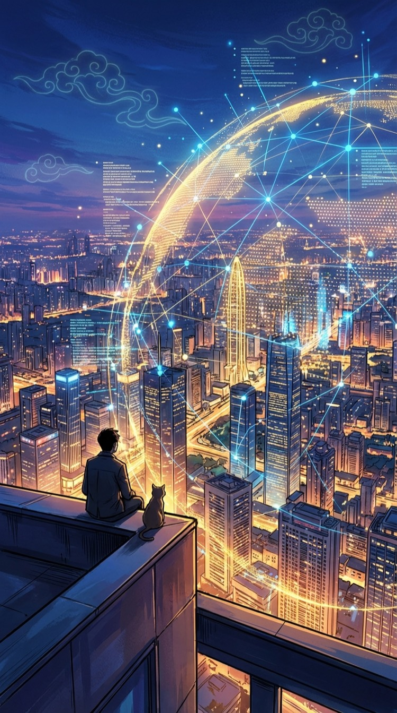
【超远景 / 高处俯瞰 / 深圳夜景 + 金色灵气网络】
我站在天台边，看着这座城市。
普通人看到的是灯火辉煌。我看到的是——
无数金色光点标注着商业机会，灵气线连接着供需关系，数据流在城市上空涌动。
这个城市有另一个维度。一个只有我能看到的维度。
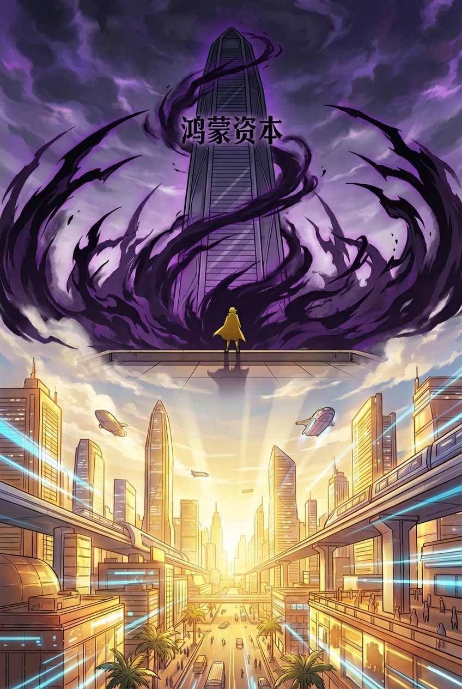
【终幕 / 分割构图 / 金色vs黑紫 / 史诗对峙】
远处，鸿蒙大厦的黑紫色灵气向天空蔓延，像巨兽的爪子。
我脚下，金色的灵气像薄薄的火焰，刚刚点燃。
炼气一层 vs 不知道多少层的魔修。
47万的账户 vs 千亿的资本帝国。
但没关系。所有的逆袭故事，都是从这种差距开始的。
大橘蹲在我脚边，尾巴卷起来，金色瞳孔映着城市的光。
走吧，韭……宿主。你的修仙之路，今晚才刚开始。
商道修仙系统已绑定。
赵鸿渊的魔修阴影笼罩深圳。
来自"R"的神秘威胁浮出水面。
而我，只有炼气一层。